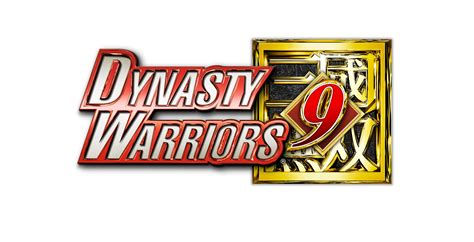
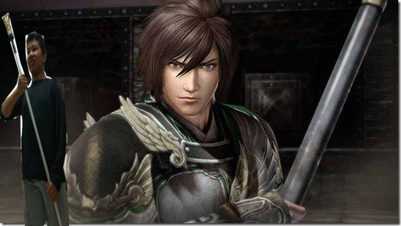
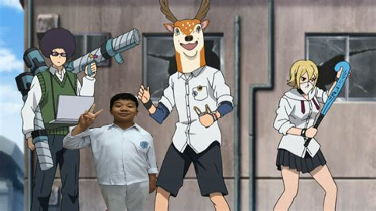

Hi, Nama saya Muhammad Rifky Oktaprima biasa dipanggil Okta. saya lahir pada tanggal 01/10/2001 di Padang. saya merupakan anak pertama dari tiga bersaudara. Saya anak dari bapak Achmad Erwinsyah dan Ibu yeswery. Saya memiliki 1 adik perempuan dan 1 adik laki laki, adik saya yang perempuan bernama Reishya ananda dan sekarang ia bersekolah di SMP IT ABN dan adik saya yang laki laki bernama Muhammad Adzhaby, ia bersekolah di SD Kencana 1.
Saya dulu tinggal di Padang dan bersekolah disana.Setelah saya naik kelas 1 SD saya pindah ke kota Palangkaraya di Kalimantan Tengah. Saya SD di SDIT Al-furqan.Setelah saya naik ke kelas 3, saya pindah ke kota bogor di jawa barat. Saya bersekolah di SDN Dewi Sartika 1,dan SMP di SMP IT ABN(Sekolah yang sama dengan adekku hihihihi >_<). Dan sekarang saya bersekolah di SMK-SMAK Bogor.SMK-SMAK Bogor atau bisa disebut SMAKBO adalah sekolah terbaik yang ada di Bogor.
Hobi saya adalah Main game. Game kesukaan saya Dynasty Warrior. Dynasty warrior adalah seri permainan yang diproduksi oleh KOEI
Dynasty Warrior Mengangkat Kisah Tiga kerajaan besar di China. Karakter kesukaan saya adalah Jiang Wei.Jiang wei adalah karakter dari kerajaan SHU, merupakan Strategis SHU di masa Liu Shan sesudah The Sleeping dragon Zhuge Liang. Jiang Wei menggunakan senjata Trident.
Hobiku yang lain adalah Menonton kartun jepang atau disebut anime. Salah satu Kartun jepang/ Anime yang saya sukai adalah Sket Dance. Sket dance adalah sebuah serial manga jepang yang mengisahkan tentang anak SMA yang membentuk klub Penolong orang. Mereka beranggotakan 3 orang yaitu Bossun(aka fujisaki yusuke), Himeko(onizuka Hime), dan Switch (Uzui kazuyoshi)
